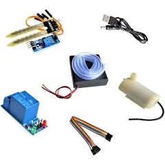

Para la implementación de un sistema de riego por goteo automatizado, que utilice sensores de humedad del suelo, sistemas de control automático o dispositivos de monitoreo remoto, es esencial contar con una lista de materiales adecuados. La selección precisa puede variar según el tipo específico de sistema elegido, pero a continuación se presenta una lista detallada de los materiales comúnmente utilizados:
-
Sensores de Humedad del Suelo:
- Electrodos de Sensores: Dispositivos insertados en el suelo para medir los niveles de humedad. Los sensores más avanzados pueden ofrecer datos en tiempo real y tienen una alta precisión.
- Interfaz de Comunicación: Componentes que permiten que los sensores transmitan datos al sistema de control. Esto puede incluir transmisores inalámbricos o conexiones directas a los controladores.
-
Válvulas Solenoides:
- Válvulas de Control de Flujo: Se utilizan para abrir o cerrar automáticamente el flujo de agua según las instrucciones recibidas del controlador.
- Componentes Electrónicos de Activación: Equipos necesarios para accionar las válvulas en respuesta a señales eléctricas del sistema de control.
-
Controladores:
- Controladores Programables: Dispositivos que permiten configurar y ajustar horarios específicos de riego. Estos controladores pueden variar desde modelos básicos hasta sistemas avanzados con múltiples zonas de riego y capacidades de monitoreo en tiempo real.
- Integración de Sensores: Capacidades para recibir y procesar datos de sensores de humedad del suelo, permitiendo ajustes automáticos en los horarios de riego según las condiciones del suelo.
-
Dispositivos de Monitoreo Remoto:
- Estaciones Base y Módulos de Comunicación: Equipos que permiten la supervisión y control del sistema de riego desde ubicaciones remotas a través de internet.
- Software y Aplicaciones Móviles: Programas y aplicaciones que permiten visualizar los datos de riego, recibir alertas de problemas y ajustar configuraciones desde dispositivos móviles o computadoras.
-
Tubos y Accesorios de Riego por Goteo:
- Tuberías Principales y Secundarias: Tubos que transportan el agua desde la fuente principal hasta los puntos de distribución.
- Goteros y Emisores: Dispositivos que liberan agua de manera controlada y precisa directamente a las plantas.
- Conectores y Adaptadores: Elementos necesarios para ensamblar el sistema de tuberías, incluyendo codos, tees, y conectores rápidos.
-
Cableado y Conexiones Eléctricas:
- Cables de Señal y Alimentación: Utilizados para conectar los sensores, válvulas y controladores, asegurando una comunicación y suministro de energía fiable.
- Accesorios de Montaje y Protección: Materiales para asegurar y proteger los cables y conexiones, como abrazaderas, conductos y cajas de conexiones.
-
Equipos Adicionales para Integración y Soporte:
- Baterías de Respaldo y Fuentes de Alimentación Ininterrumpida (UPS): Para asegurar el funcionamiento continuo del sistema en caso de fallas de energía.
- Filtros y Reguladores de Presión: Dispositivos que aseguran que el agua llegue a los emisores de riego a la presión adecuada y sin impurezas que puedan obstruir los goteros.
La implementación de un sistema de riego por goteo automatizado no solo requiere la selección de los materiales adecuados, sino también una planificación cuidadosa y una instalación meticulosa. Es fundamental que todos los componentes sean compatibles entre sí y cumplan con las especificaciones técnicas del sistema. Además, la calidad de los materiales influye directamente en la eficiencia y durabilidad del sistema, por lo que es aconsejable invertir en componentes de alta calidad y buscar asesoramiento técnico especializado si es necesario.